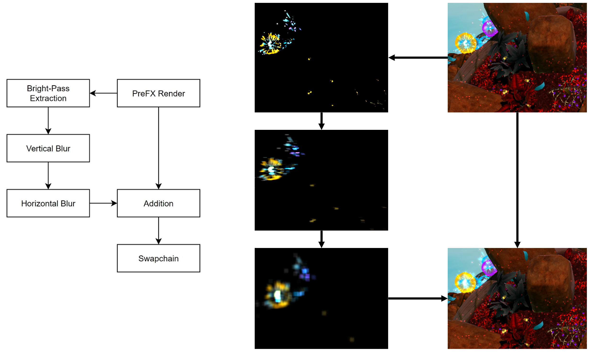

Snake Party
Synopsis
- Created a deferred rendering extension to Play3D in C++.
- Set up point lights, spot lights, and decals in the deferred renderer.
- Used De Castaljau's Algorithm to procedurally generate a mesh for the snake player character.
- Wrote several shaders - including a bloom post effect - in HLSL.
- Worked with a team of 11 programmers and 5 technical artists.
- Used perforce to solve merge conflicts and perform swarm code reviews.
- Used RenderDoc and PIX to debug and profile different object and PostFX shaders.
- Used ADO within an Agile SCRUM framework; acting as scrum leader for a sprint.
Deferred Rendering
Deferred rendering is graphics technique where the geometry data
(e.g., albedo, normals, depth) are rendered first into multiple
textures - together called the GBuffer. Then, in a second pass,
lighting calculations are done in screen-space using the data stored
in those buffers.
As opposed to other approaches like forward rendering, it is much
cheaper in a deferred renderer to support potentially hundreds of
dynamic lights with little performance cost. Therefore we chose a
deferred renderer to support our vision for the game, which was bright
and colourful and lit up like... a party!
Deferred Rendering also opens up many opportunities for effects and post effects. For example, in this deferred
renderer, I set up a decal renderer.
Below you can see my RenderDoc captures of the entire GBuffer.
Below you can see my RenderDoc captures of the point lighting pass and decal render pass.
Procedural Mesh Generation
As part of Snake Party, we needed a mesh for the player character which would follow the physics skeleton set
up by a colleague of mine. This mesh would need to be procedrually generated, lit and textured.
To achieve this, I used De Castaljau's Algorithm for generating bezier curves.
This consisted of taking the joints from the physics system, and using them to generate a full set of control
points for a cubic bezier curve. Then I generate interpolation points between each set of four control points.
For each of the interpolated points, I also interpolate an up vector.
Then I generate a circle of vertices around each interpolation point using the up vector and generating a right
vector. After generating my vertices, I stitch them together by indexing them. I also generate normals that
radially point outward from the centre of the circle of verts, and UV's so that the mesh can be textured.

Bloom
Bloom consists of extracting the pixels in your render which are bright, blurring those pixels, and blending them back into your render. It emphasises bright parts of the image by making them bleed slightly, mimicing the ways cameras and our eyes see bright lights; lending to a specific style that we were striving for.
As you can see from the diagram above, the bloom approach I used did vertical bloom and horizontal bloom in seperate passes, specifically using two different 1D kernels. I decided to take this approach after profiling the bloom using PIX, since using two 1D kernels instead of a singular 2D kernel meant that the bloom scaled with the resolution at an algorithmic complexity of O(n) instead of O(n^2). Doing this resulted in a performance improvement of 78.5% on the GPU.